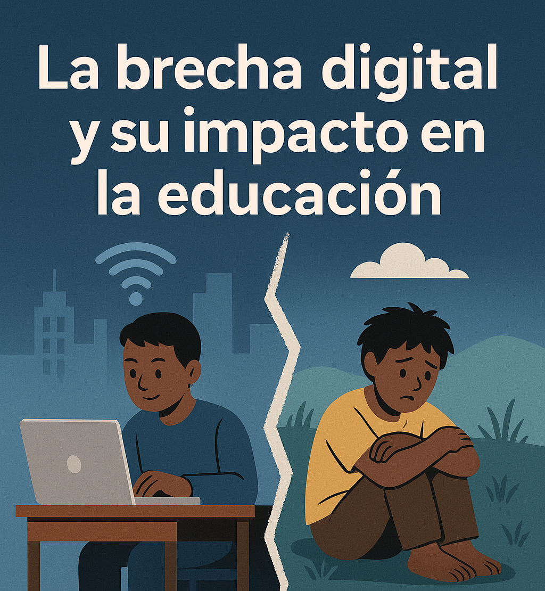
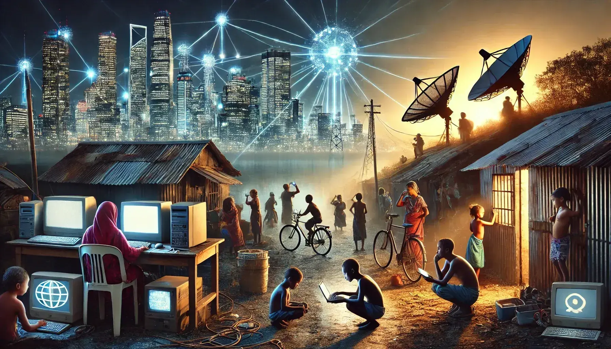
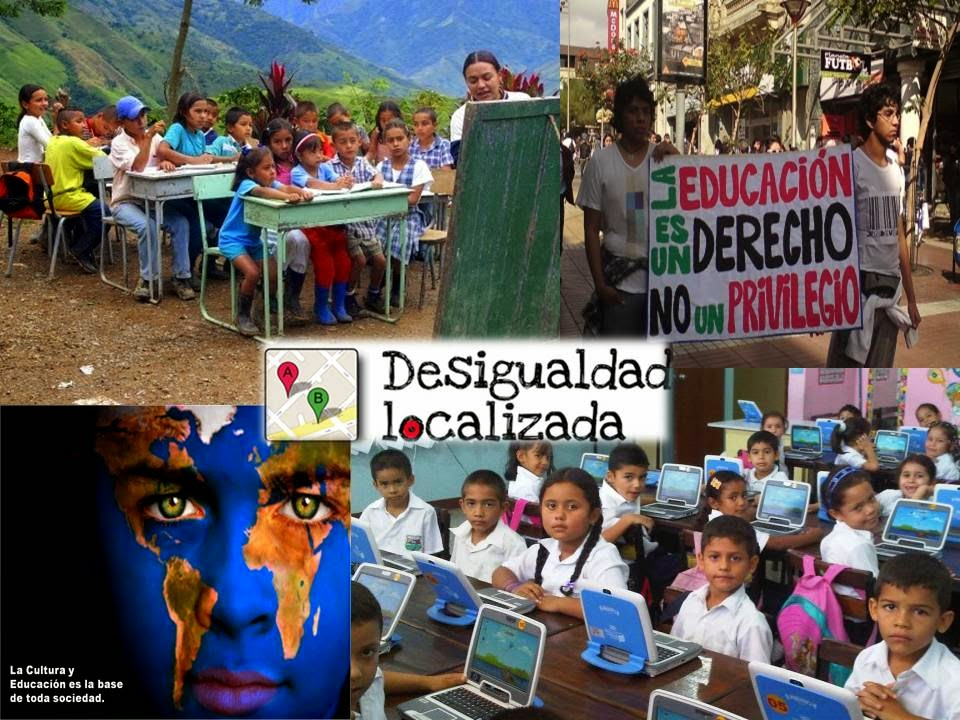

Introducción
El desarrollo de las tecnologías web ha generado importantes oportunidades para la sociedad y los negocios. Su implementación ha facilitado el acceso a la información, la comunicación, la prestación de servicios y el desarrollo de nuevas actividades económicas.
Sin embargo, la expansión de estas tecnologías también presenta desafíos relacionados con las desigualdades sociales, la seguridad de la información, la privacidad de los usuarios y el impacto ambiental de la infraestructura tecnológica.
Por esta razón, el desarrollo de las tecnologías web debe estar acompañado de estrategias que promuevan su utilización segura, responsable, sostenible e inclusiva.
Principales desafios de las tecnologías web
Brecha digital

La brecha digital se refiere a las desigualdades existentes entre personas, comunidades y organizaciones respecto al acceso, utilización y aprovechamiento de las tecnologías digitales.
Estas diferencias pueden limitar las oportunidades educativas, laborales, comerciales y sociales de quienes no disponen de los recursos necesarios para participar en los entornos digitales.
La brecha digital no se relaciona únicamente con la disponibilidad de una conexión a Internet, sino también con la capacidad económica, la calidad de la conectividad y las competencias tecnológicas de los usuarios.
Principales causas de la brecha digital
- Limitaciones económicas para adquirir dispositivos tecnológicos.
- Insuficiente infraestructura de telecomunicaciones.
- Desigualdad en el acceso a Internet entre regiones.
- Falta de conocimientos y competencias digitales.
- Servicios digitales que presentan barreras de accesibilidad.
Desigualdad en la conectividad mundial


Según el informe Facts and Figures 2026 de la Unión Internacional de Telecomunicaciones (UIT), aproximadamente el 76 % de la población mundial utiliza Internet.
Sin embargo, existen diferencias significativas entre los países de ingresos altos y los países de ingresos bajos.
| Indicador | Porcentaje de población que usa internet |
|---|---|
| Promedio mundial | 76 % |
| Países de ingresos altos | 93 % |
| Países de ingresos bajos | 32 % |
Estas cifras evidencian que el crecimiento de la conectividad mundial no se distribuye de manera uniforme. Reducir estas desigualdades requiere ampliar la infraestructura de telecomunicaciones, mejorar la asequibilidad de los servicios y promover la formación en competencias digitales.
Fuente: Unión Internacional de Telecomunicaciones (2026), Facts and Figures 2026.
Privacidad y protección de datos personales
El funcionamiento de numerosas plataformas web implica la recopilación, almacenamiento y procesamiento de información de los usuarios.
Los sitios de comercio electrónico, las redes sociales, las plataformas educativas y los servicios gubernamentales pueden manejar información personal necesaria para ofrecer sus funcionalidades.
No obstante, una gestión inadecuada de estos datos puede afectar la privacidad de las personas y generar riesgos relacionados con el uso no autorizado de su información.
Información personal que pueden manejar las plataformas web
- Nombres y datos de identificación.
- Direcciones de correo electrónico y números telefónicos.
- Información financiera.
- Historial de navegación y preferencias.
- Información relacionada con la ubicación geográfica.
Según la OCDE, más de la mitad de los participantes en su encuesta Truth Quest de 2024 manifestó evitar determinados sitios web, aplicaciones o redes sociales debido a preocupaciones relacionadas con la privacidad.
Por ello, las organizaciones deben establecer mecanismos que permitan proteger la información y comunicar de manera transparente las finalidades para las cuales recopilan los datos.
Fuente: OCDE (2024), OECD Digital Economy Outlook 2024, volumen 2.
Impacto ambiental de las tecnologías web
Aunque los servicios web funcionan mediante plataformas digitales, su operación depende de infraestructura física, dispositivos electrónicos, redes de telecomunicaciones y centros de datos.
La fabricación, funcionamiento y renovación de estos recursos tecnológicos generan impactos ambientales asociados con el consumo energético, la utilización de materias primas y la generación de residuos electrónicos.
Según el Informe sobre la Economía Digital 2024 de ONU Comercio y Desarrollo (UNCTAD), la fabricación y utilización de dispositivos digitales, centros de datos y redes de tecnologías de la información y comunicación representan entre el 6 % y el 12 % del consumo mundial de electricidad, según sus estimaciones.
Esta cifra corresponde al conjunto de la infraestructura y los dispositivos digitales, no exclusivamente a los servicios web.
Principales desafios ambientales
- Consumo de energía de la infraestructura tecnológica.
- Utilización de materias primas para fabricar dispositivos.
- Generación de residuos electrónicos.
- Consumo de agua en determinados sistemas de refrigeración.
- Impacto ambiental relacionado con la distribución de productos adquiridos mediante comercio electrónico.
Estrategias para reducir el impacto ambiental
- Mejorar la eficiencia energética de los equipos.
- Prolongar la vida útil de los dispositivos electrónicos.
- Promover la reutilización y el reciclaje.
- Optimizar el funcionamiento de las aplicaciones web.
- Favorecer el uso de fuentes de energía renovables.
El desarrollo de las tecnologías web debe considerar tanto sus beneficios económicos y sociales como los recursos necesarios para mantener su funcionamiento.
Fuente: UNCTAD (2024), Digital Economy Report 2024.
Perspectivas futuras de las tecnologías web
Las tecnologías web se encuentran en constante evolución. El desarrollo de nuevas herramientas, estándares y modelos de procesamiento de información permite incorporar funcionalidades cada vez más avanzadas en los servicios digitales. Entre las tendencias que pueden influir en su evolución se encuentran la inteligencia artificial, la computación en la nube, la automatización y la integración con dispositivos conectados a Internet.
Principales tendencias tecnológicas
| Tecnología | Posibles aplicaciones en la Web |
|---|---|
| Inteligencia artificial (IA) | Asistentes virtuales, recomendaciones y análisis de información. |
| Computación en la nube | Alojamiento y procesamiento de aplicaciones y servicios web. |
| Internet de la cosas (IoT) | Supervisión y control de dispositivos mediante plataformas web. |
| Automatización inteligente | Optimización de procesos administrativos y comerciales. |
| Tecnologías inmersivas | Experiencias educativas, comerciales y de entretenimiento mediante entornos interactivos. |
El Banco Mundial, en su informe Digital Progress and Trends Report 2025, destaca que la inteligencia artificial puede ampliar el acceso a información y servicios, favorecer la productividad y generar nuevas oportunidades económicas.
Sin embargo, también identifica limitaciones relacionadas con la infraestructura de conectividad, la capacidad de procesamiento, la disponibilidad de datos y las competencias digitales.
El futuro de las tecnologías web dependerá no solamente de los avances tecnológicos, sino también de la capacidad de las organizaciones y los gobiernos para implementar soluciones accesibles, seguras y responsables.
Fuente: Banco Mundial (2025), Digital Progress and Trends Report 2025: Strengthening AI Foundations.
Conclusiones
Las tecnologías web han transformado significativamente la sociedad y los negocios, facilitando el acceso a información, servicios educativos, sistemas de comunicación y nuevas oportunidades comerciales.
En el ámbito social, han permitido reducir determinadas barreras geográficas y ampliar las posibilidades de interacción, aprendizaje y acceso a servicios públicos.
En el ámbito empresarial, han contribuido al desarrollo del comercio electrónico, la automatización de procesos y la creación de nuevos modelos de negocio.
Sin embargo, sus beneficios no se distribuyen de manera uniforme. Persisten desafíos relacionados con la brecha digital, la privacidad, la ciberseguridad, la accesibilidad y la sostenibilidad ambiental.
Por lo tanto, el desarrollo y aprovechamiento de las tecnologías web debe orientarse hacia la construcción de entornos digitales inclusivos, seguros y sostenibles, en los que la innovación tecnológica contribuya al bienestar de las personas y al desarrollo económico de las organizaciones.
Cntacto y opiniones
Blibliografía
-
Banco Mundial. (2025).
Digital progress and trends report 2025: Strengthening AI foundations. Consultar fuente -
Organización para la Cooperación y el Desarrollo Económicos. (2024).
OECD digital economy outlook 2024 (Volume 2): Strengthening connectivity, innovation and trust. OECD Publishing. Consultar fuente -
OWASP Foundation. (2025).
OWASP Top 10:2025. Consultar fuente -
Unión Internacional de Telecomunicaciones. (2026).
Measuring digital development: Facts and figures 2026. Consultar fuente -
United Nations Conference on Trade and Development. (2024b).
Digital economy report 2024: Shaping an environmentally sustainable and inclusive digital future. Consultar fuente -
World Wide Web Consortium. (s. f.).
Introducción a la accesibilidad web. Web Accessibility Initiative. Consultar fuente